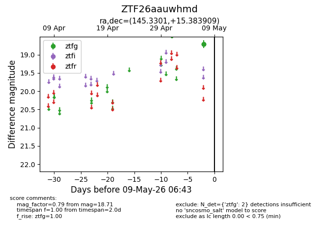
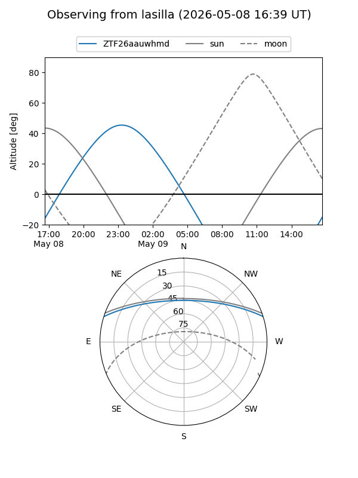
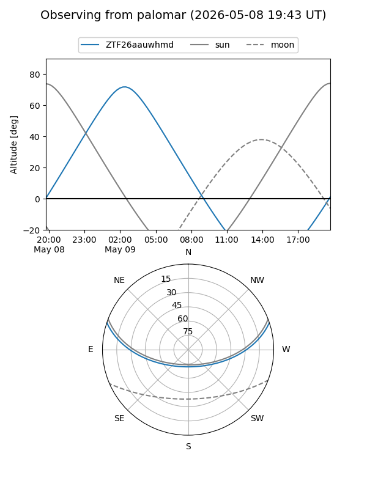

ZTF26aauwhmd
Target ZTF26aauwhmd at 2026-05-09 06:44
Aliases and brokers:
FINK: link
Lasair: link
ALeRCE: link
alt names
ZTF26aauwhmd (ztf,fink_ztf)
Coordinates:
equatorial (ra, dec) = 145.3301,+15.38391
equatorial (HMS+DMS) = 09:41:19.23,+15:23:02.07
galactic (l, b) = (217.8146,+44.45635)
Flags:
Photometry:
last ztfg=18.71
2 ztfg detections
Lightcurve

Visibility


Additional plots